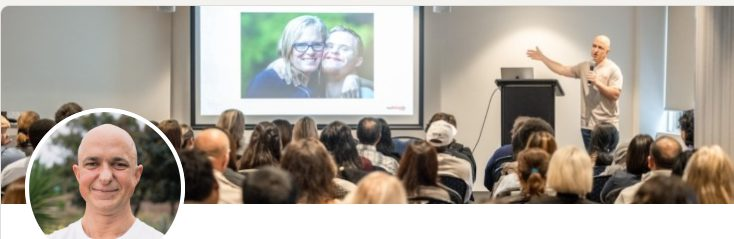
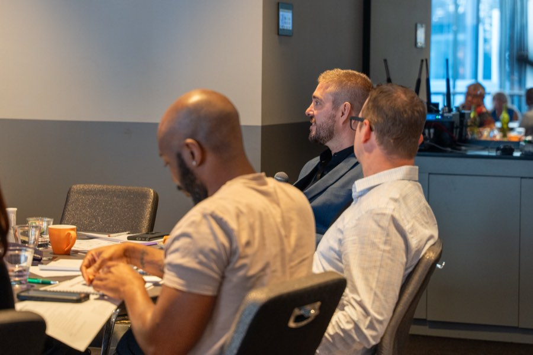
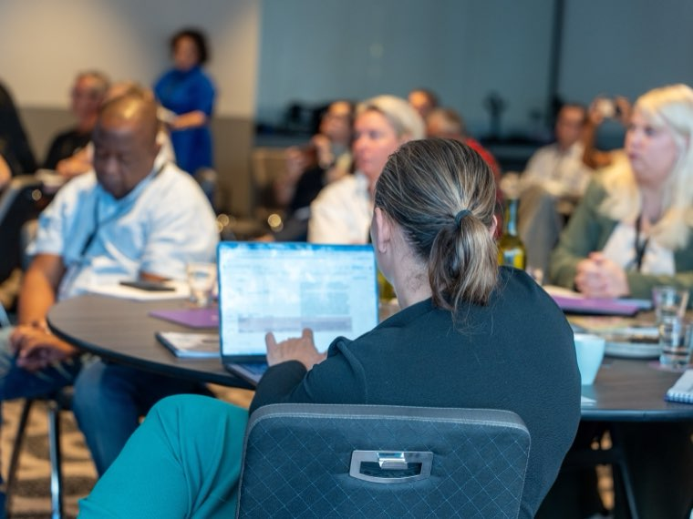
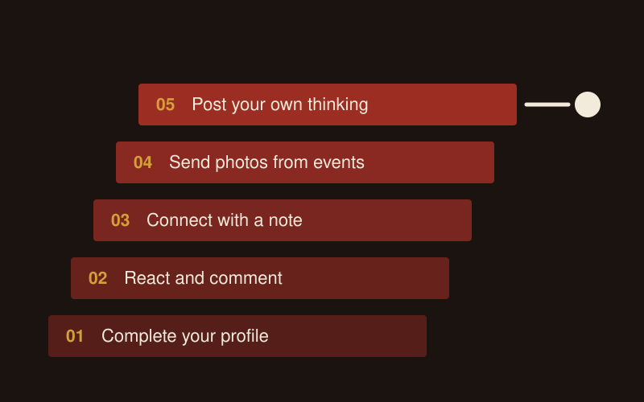

LinkedIn for NDIS Providers: Profile Building for Owners and Staff
To improve your LinkedIn as an NDIS provider, change your headline to say who you help and how, add a cover photo of you doing the work, and open your About section with why you do it. Then spend five minutes a day commenting and connecting with support coordinators and allied health. Referrers look you up there before they refer.
I build LinkedIn profiles for NDIS business owners, leaders and staff, then set them up to post and reach out.
Why does LinkedIn matter for an NDIS business?
Support coordinators and allied health check you out on LinkedIn before they send a family your way. They can't trust a profile that says nothing.
As I told one provider's staff, "this sector is built on know like and trust right, if I know you I like you and I trust you I'm going to refer to you."
My own business runs the same way: "My Chris Lapa LinkedIn is how I generate a lot if not all of my business these days."
What does a strong LinkedIn profile look like for an NDIS provider?
A strong profile tells a coordinator within seconds who you help and why you care.
| Part of the profile | What I usually find | What I change it to |
|---|---|---|
| Headline | Job title and company name | Who you help and how you help them |
| Cover photo | The default blue banner | A real photo of you at work or speaking at an event |
| About section | A list of past roles | Why you do this work, then your history |
| Activity | Nothing posted in a year | Comments, shares and frequent posting |
Take my own headline: "I don't say I'm a growth and marketing guy I say I'm supporting ndis and aged care providers to simplify and drive their growth." The audience comes first, then how I help.
My cover photo shows me talking in front of a group, which I believe builds authority before anyone reads a word. Use real photos, never stock or AI-generated people.
At one staff session, I suggested a housing coordinator open their About section with why the right home matters for someone with complex care needs.

Should NDIS providers focus on a personal profile or a company page?
Start with personal profiles. People refer to people, and a coordinator will read a post from someone they have met before a post from a logo. The company page is the place your team shares from, using a simple ladder:
- Share the company post.
- Share it with a line of your own thoughts. I call this the gold standard.
- Write your own post.
My rule of thumb is that your own post will go further than a share almost every time.
Should my staff have LinkedIn profiles too?
Yes. When a referrer is told to send someone to one of your coordinators and looks them up, "they're going to see more than just a stagnant profile."
Staff ask what happens if they leave. My answer: "you may move on but you're building something for yourself."

Who should NDIS business owners connect with on LinkedIn?
Connect with the people who refer and the people who help decide:
- Support coordinators and specialist support coordinators
- Plan managers and local area coordinators
- Occupational therapists and other allied health
- Hospital discharge teams and social workers
- Insurance case managers, including iCare
Send every request with a short note. A blank request from a stranger gives them no reason to accept.
How do you turn LinkedIn connections into referrals without pitching?
Build the relationship before you ask for anything, using a four-step ladder:
- Engage: react to and comment on their posts.
- Connect: send a request with a note.
- Converse: start an ordinary conversation.
- Ask: only then suggest a call or a coffee.
I explain it as tennis: "just get the ball back over, a little lob, lob, lob rather than going for the grand slam." My first message is usually "Hey, awesome to connect, how's things?"
For one provider I work with, a direct approach to managers produced roughly 50 connection requests, 10 to 15 replies and 5 meetings.
AI can find the right people and build the tracker. I keep it away from sending anything, because "LinkedIn picks up automation and can suspend the account."

What should I post on LinkedIn as an NDIS provider?
Post about your work and the people doing it, in your own words. Write down 3 to 5 topics you care about, and remember "it doesn't all have to be about the sector." Then climb the posting ladder and stop wherever you are comfortable:
- Complete your profile with a who-you-help headline.
- React and comment on posts. Skip "great post" and say something specific.
- Connect with a note every time.
- Take phone photos at events and send them with a voice note to whoever posts for you.
- Post your own thinking.

The daily minimum is one comment and two reactions, about five minutes. Plain posts do well: a plain text post from one of my team reached about 30,000 people, far more than the designed content around it.
I tell every first-time poster, "your first post is your worst post and you're only going to get better."
What can NDIS providers post about participants on LinkedIn?
Post nothing that identifies a participant without their written consent for that specific use. These rules cover every platform, and staff posting on their own profiles.
- The NDIS Code of Conduct applies to registered and unregistered providers and to every worker. Two of its elements apply to every post: respect the privacy of people with disability, and act with integrity, honesty and transparency.
- A photo is personal information if the person can be identified. The OAIC says you need consent to collect an image that records sensitive information, and a photo that shows someone's disability or health status does. Get written consent for that specific use from the participant or their guardian before anything goes up.
- The Privacy Act covers health service providers regardless of turnover, so the small business exemption does not apply to you.
- You need written consent from the NDIA to use the NDIS logo on any banner, post or ad. Only registered providers can use the "I/we heart NDIS" and "I/we support NDIS" logos, with the "Registered Provider" tagline.
- Never write "NDIS approved" or "100% NDIS funded", and never suggest a link to the NDIA. The NDIA reports suspected misleading conduct to the ACCC.
My rule for staff: when in doubt, leave it out.
What does the LinkedIn profile building service include?
- A profile audit for you and your leadership team, checked against what a referrer sees.
- A rewritten headline and About section for each person, plus a cover photo brief.
- A staff session with homework: cover photo, audience-first headline, a bio that opens with who you help, and one post within 4 weeks.
- A follow-up audit of every profile, done live with the group.
- A posting and outreach plan, with a list of coordinators and referrers to connect with.
- A done-for-you option, where my team drafts and posts and you approve.
At one provider, two staff had every tool and still posted nothing: "I led them to the water, they wouldn't drink." So my team drafts and they approve. I run my own profile this way too: "A lot of my LinkedIn content is done by my team, I just kind of give it the final tick."
LinkedIn sits inside your wider social media and content and referral partnerships work. For the bigger picture, read how to grow your NDIS business through social media.
FAQ
How long does it take to see referrals from LinkedIn?
Fixing a profile takes an afternoon. Referrals take longer, because they come from relationships, and you build those through months of small contact: a comment, a connection request with a note, an ordinary conversation. Keep up the five-minute daily routine for a few months before you judge it, and ask every new enquiry how they found you so you can see which ones came through LinkedIn.
Can you write profiles for my whole leadership team?
Yes. I write the headline and About section for each person and brief the cover photo, starting with the owner and executives because coordinators look them up first. Frontline, intake and business development staff then get a session with homework and a follow-up audit, so every profile a referrer checks says who your business helps.
Can I use the NDIS logo on my LinkedIn banner?
Not without written consent from the NDIA. Its logo guidelines say nobody can use the NDIS logo on publicity or advertising without that consent. Registered providers can use the "I/we heart NDIS" or "I/we support NDIS" logos with the "Registered Provider" tagline. Never write "NDIS approved" or suggest any link to the NDIA.
Can I share participant success stories on LinkedIn?
Yes, with written consent for that specific use from the participant or their guardian, given before you post. A photo or story that shows someone's disability or health status is sensitive information under the Privacy Act, and the NDIS Code of Conduct requires you to respect participants' privacy. When in doubt, leave it out, and use staff and team stories instead.
Do you post on my behalf, or set me up to post myself?
Both, depending on your team. Some owners and staff want the profile fixed and a routine to follow, and they run it themselves after the session. Others need the done-for-you option, where my team drafts the posts and you approve each one before it goes out. I run my own LinkedIn the second way.
Get a free growth audit
Book a free growth audit and I'll show you where LinkedIn fits in your growth plan and which profiles to fix first.